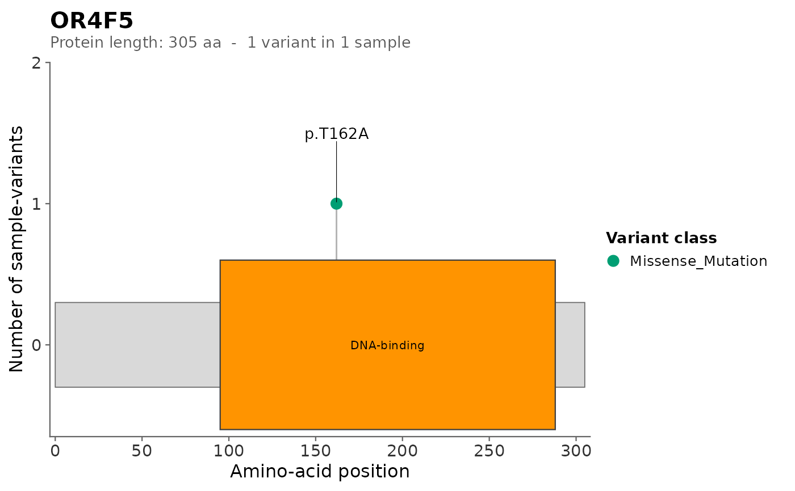

Builds a ggplot2 lollipop plot of every protein-altering variant of a single
gene in a read.gvr() / gvr_filter() / gvr_novel() table. Each amino-acid
position is a stem; each sample-variant carried at that position is one dot
stacked on the stem; dots are coloured by Variant_Classification using the
package's colourblind-safe palette. A horizontal protein-body bar is drawn
along the x-axis (lollipop-style); protein domains are
overlaid as coloured rectangles on top of that bar. By default, domains are
fetched automatically from the EBI InterPro REST API (domains = "auto").
Pass domains = NULL for a plain bar with no domains, or supply a
data.frame for custom domain coordinates. By default writes both an
.svg and a .png to disk (matching gvr_plot() behaviour).
Usage
gvr_lollipop(
gvr,
gene,
vc_keep = NULL,
protein_length = NULL,
protein_length_strict = FALSE,
domains = "auto",
organism = 9606L,
cache_dir = NULL,
label_top = 5L,
domain_label_min_frac = 0.05,
domain_label_mode = c("name", "id", "number", "none", "auto"),
domain_name_abbrev = TRUE,
domain_label_position = c("inside", "below"),
domain_label_wrap = TRUE,
hotspot_window = 20L,
hotspot_min_n = 4,
stem_alpha = 0.6,
point_size = 3,
stem_color = "grey50",
bar_color = "grey85",
bar_border = "grey40",
base_size = 12,
axis_text_size = 11,
axis_title_size = 12,
axis_text_color = "grey20",
axis_title_color = "black",
axis_line_color = "grey40",
axis_line_width = 0.4,
out_dir = ".",
out_subdir = "gvr_lollipop",
out_prefix = gene,
width = 10,
height = 4,
dpi = 300,
variant_palette = "gvr",
domain_palette = "okabe_ito",
verbose = TRUE
)Arguments
- gvr
An MAF-like
data.table/data.framefromread.gvr(), or any compatible table with at leastHugo_Symbol,HGVSp_Short,Variant_Classification,Tumor_Sample_Barcode,Protein_position.- gene
Character(1). The gene symbol (matched against
Hugo_Symbol).- vc_keep
Character vector of
Variant_Classificationvalues to keep.NULL(default) uses the 9-class protein-altering set fromgvr_filter().- protein_length
Integer(1) or
NULL. Sets the x-axis length (in amino acids). Resolved with the following precedence:UniProt canonical sequence length, fetched via the same UniProt REST query used for
domains = "auto". Wins by default; seeprotein_length_strictto opt out.User-supplied value when
protein_length_strict = TRUE, or when UniProt is unreachable.Mode of the
<pos>/<total>totals parsed from the tableProtein_positioncolumn (entries without a/are skipped).ceiling(max(positions) * 1.1)fallback.
The final value is always at least
max(positions)so no mutation is clipped. A one-linemessage()is emitted when UniProt overrides a user-supplied value by more than 5%.- protein_length_strict
Logical(1). When
TRUE, the user'sprotein_lengthis kept verbatim and the UniProt canonical length is not used (the max-position safety net still applies). DefaultFALSE.- domains
"auto",NULL, or adata.frame. Default"auto": domains are fetched from the EBI InterPro REST API and cached.NULLdraws a plain bar with no domain rectangles. Adata.framewith columnsstart,end(and optionalname,color) draws custom domain rectangles. See Details for the three accepted forms.- organism
Integer or string. NCBI taxonomy id used when
domains = "auto"(passed through to the UniProt search asorganism_id). Default9606L(human). Ignored whendomainsis not"auto".- cache_dir
NULL, a directory path, orFALSE. Controls the on-disk cache used fordomains = "auto".NULL(default) triggers the precedence chain documented in Details.FALSEdisables on-disk caching. Ignored whendomainsis not"auto".- label_top
Integer(1). Number of top-counted positions to label.
0disables labels,Inflabels every position. Default5L.- domain_label_min_frac
Numeric(1) in
[0, 1]. Minimum domain width as a fraction ofprotein_lengthfor a domain label to be rendered in"name"and"id"modes. Default0.05(5%). Lower this for long proteins (e.g.0.01so that even small domains get labelled). Ignored whendomain_label_mode = "number"(all domains labelled) or"none".- domain_label_mode
One of
"name"(default),"id","number", or"none". Controls how domain rectangles are labelled."name": human-readable InterPro name, repelled below the bar with leader lines (usesggrepel::geom_text_repel()when available)."id": InterPro accession (e.g.IPR011615); falls back to name when accession is missing (user-supplied data.frame without it)."number": numbers 1..N centered in each rectangle, with a companion"Domains"legend mapping number to full name. Requires the optionalggnewscalepackage; without it, only numbers render."auto": opt-in heuristic. Use"number"whenprotein_length > 2000aa AND>= 5domains are drawn (long, densely-annotated proteins where in-plot names overlap), otherwise use"name". Withverbose = TRUE, the resolved mode and reason are printed."none": no labels (rely on the variant legend only).
- domain_name_abbrev
Logical(1). When
TRUE(default), apply a small set of substitutions to compress verbose InterPro domain names (e.g. "von Willebrand factor, type D domain" becomes "VWF type-D") so that labels fit inside narrower rectangles indomain_label_mode = "name". SetFALSEto keep the raw InterPro names verbatim.- domain_label_position
One of
"inside"(default) or"below". Controls where InterPro domain labels render relative to the domain rectangle."inside"places labels centred inside each rectangle with an automatically chosen black/white text colour for contrast against the domain fill (WCAG luminance rule)."below"reproduces the legacy layout used in earlier versions (labels under the bar, leader lines from each rectangle).When
domain_label_position = "inside", labels that don't fit inside their domain rectangle (estimated by character count vs rectangle width) fall back to the"below"style with a leader line on a per-domain basis so no information is lost. A verbose message reports the count of overflowing labels.- domain_label_wrap
Logical(1). When
TRUE(default), inside-mode domain labels that don't fit on one line are wrapped onto a second line at the nearest comma (or at a space if no commas) and the font is shrunk in 10% steps down to a floor of 60% of base. Wrapping is per-domain: labels that already fit on one line stay unchanged. If a label still overflows after the 2-line + 60% font cascade, it falls back to the existing below-bar leader (so no information is lost). SetFALSEto keep the pre-Phase-L behaviour: 1-line labels only, with any overflow going directly to the below-bar fallback.- hotspot_window
Integer(1). Sliding-window width (in amino acids) used to detect mutation hotspots. A hotspot is a region containing at least
hotspot_min_ndistinct variant positions withinhotspot_windowaa. Drawn as a soft translucent vertical band behind the bar/domains/stems. Default20L(publication-tight rule). Increase for noisier/exploratory cohorts.- hotspot_min_n
Numeric(1). Minimum distinct variant positions inside a
hotspot_window-wide region for it to be drawn as a hotspot band. Default4. PassInfto disable hotspot detection entirely. Counting uses unique aa positions (not sample counts), so a single recurrently-hit position does not by itself create a band.- stem_alpha
Numeric(1) in
[0, 1]. Opacity of lollipop stems. Default0.6. Lower this further for very dense plots; raise to1for the original solid stems.- point_size
Numeric(1). Dot size. Default
3.- stem_color
Character(1). Stem (vertical line) colour. Default
"grey50".- bar_color
Character(1). Protein-body bar fill colour. Default
"grey85".- bar_border
Character(1) or
NA. Protein-body bar border colour. Default"grey40".- base_size
Numeric(1). ggplot2 base font size. Default
12.- axis_text_size
Numeric(1). Font size of axis tick labels (aa positions on x, count on y). Default
11, matching the existing visual output. Set to12or higher for publication-style figures.- axis_title_size
Numeric(1). Font size of axis titles ("Amino acid position" / "Variant count"). Default
12. Set to14for sibling- package publication defaults.- axis_text_color
Character(1). Colour of axis tick labels. Default
"grey20"(current visual). Set to"black"for sibling-package publication defaults.- axis_title_color
Character(1). Colour of axis titles. Default
"black".- axis_line_color
Character(1). Colour of axis lines and ticks. Default
"grey40"(current visual). Set to"black"for sibling- package publication defaults.- axis_line_width
Numeric(1). Line width (in
ggplot2linewidth units) of axis lines and ticks. Default0.4(current visual). Set to0.8for sibling-package publication defaults.- out_dir
Character(1) or
NULL. Output directory root for the SVG/PNG files. Created if it does not exist. Default"."(current working directory), matchinggvr_plot(). Set toNULLto suppress file output. By default agvr_lollipop/subfolder is created insideout_dir(seeout_subdir).- out_subdir
Character(1) or
NULL. Subfolder underout_dirto collect lollipop outputs. Default"gvr_lollipop", matching thegvr_genepos.plot()/gvr_summary()convention. Set toNULL(or"") to write files directly intoout_dirwith no subfolder.- out_prefix
Character(1) or
NULL. Filename prefix; output files are<out_prefix>_lollipop.svg/<out_prefix>_lollipop.png. Defaultgene(the gene symbol), so with defaultout_dir = "."andout_subdir = "gvr_lollipop",gvr_lollipop(f, "TP53")writes./gvr_lollipop/TP53_lollipop.svgand./gvr_lollipop/TP53_lollipop.png. Set toNULLto suppress file output.- width
Numeric(1). Plot width in inches. Default
10.- height
Numeric(1). Plot height in inches. Default
4.- dpi
Numeric(1). PNG resolution. Default
300.- variant_palette
Character. Variant colour assignment. Accepts three forms. (1) A palette name (e.g.
"gvr","nature","set2"); the default"gvr"is the semantic palette where, e.g.,Missense_Mutationis always green andNonsense_Mutationalways orange regardless of which classes are present. Any other palette name is treated as positional ordinal (colours assigned in the order classes appear in the data). (2) A named character vector of explicit hex codes for specificVariant_Classificationvalues, e.g.c(Missense_Mutation = "#FF0000", Nonsense_Mutation = "#000000"); classes not listed inherit the"gvr"defaults. (3) A mixed vector with one unnamed element used as the fallback palette name, e.g.c(Missense_Mutation = "#FF00FF", "nature")(Missense magenta, all other classes from thenaturepalette). Usegvr_list_palettes()to discover names andgvr_color_palette()to inspect colours.- domain_palette
Character. Palette used for InterPro domain rectangle fills. Accepts the same three forms as
variant_palette: palette name (default"okabe_ito"), named vector keyed by accession or domain name, or mixed vector with fallback palette name. Unlikevariant_palettethere is no"gvr"semantic special case; the default cycles a 9-colour colour-blind-safe palette across all domains.- verbose
Logical(1). If
TRUE(default), emit progress messages (counts, dropped rows, file paths, cache hits, network calls).
Value
A ggplot2 object. By default SVG and PNG files are also written to
disk as a side effect. Set out_dir = NULL to suppress file output.
Details
Variant classes are filtered down to the canonical protein-altering set (the
same 9 classes used by gvr_filter() when vc_nonSyn = TRUE):
Frame_Shift_Del, Frame_Shift_Ins, Splice_Site, Translation_Start_Site,
Nonsense_Mutation, Nonstop_Mutation, In_Frame_Del, In_Frame_Ins,
Missense_Mutation. The default can be overridden with the vc_keep
argument.
Amino-acid positions are extracted from HGVSp_Short using the regex
^p\\.[A-Z*]([0-9]+). Rows whose HGVSp_Short does not match (complex
indels with p.M1?, splice variants without p., etc.) are dropped with a
warning showing how many rows were dropped. Multi-amino-acid descriptors
(e.g. p.D1850_E1852del) match the first amino-acid number, which is the
standard 5'-most position convention.
Protein length (the x-axis upper bound) is derived from the
Protein_position column: each value is a string "<current>/<total>". The
most-common total across the gene's rows is used. If no row has a
parseable total, the x-axis falls back to max(position) * 1.1. The
protein_length argument overrides this.
Stacking: each surviving sample-variant becomes one dot. Dots sharing the same amino-acid position are stacked vertically, so the height of a stack equals the count of sample-variants at that position. Stems run from the top of the protein-body bar up to the top of the stack.
Labels: the top-label_top positions by count are annotated with their
HGVSp_Short (e.g. p.R175H). When multiple distinct HGVSp_Short share
a position, the most-common one is shown followed by (+N more). Set
label_top = 0 to disable labels, label_top = Inf to label every
position. If ggrepel is installed, labels are placed via
ggrepel::geom_text_repel(); otherwise a plain geom_text() is used.
Protein-body bar: a thin horizontal rectangle is drawn straddling y = 0
from x = 0 to x = protein_length. Bar height scales with the visible
stack height (about 4 percent of the y range, clamped to [0.15, 0.5]).
The y-axis is expanded slightly below zero to accommodate the bar.
Domains: domains accepts three forms:
"auto"(default) - the function calls the EBI InterPro REST API for thegene(gene -> UniProt accession viarest.uniprot.org, then UniProt -> InterPro domains viawww.ebi.ac.uk/interpro), keeps only InterPro-integrated entries (those withsource_database == "interpro", e.g.IPR011615), caches the result, and converts to the samedata.frameshape as below. Requires the optional packages httr and jsonlite; if either is missing, or any HTTP / parsing step fails, a warning is emitted and the plot still renders with the plain bar.NULL- no domain rectangles, just the plain bar.A
data.framewith required columnsstart,endand optional columnsname(label, shown when the rectangle is wide enough) andcolor(hex code or R colour name; auto-assigned from a colourblind-safe palette when missing). Rows entirely outside[0, protein_length]are dropped; partial overlaps are clipped.
Cache (used when domains = "auto", the default): the resolved cache
directory is picked from the first writable entry in this precedence chain:
cache_dirargument (explicit override; passFALSEto disable on-disk caching entirely).Environment variable
GVR_CACHE_DIR(useful for HPC/scratch/$USER).R option
getOption("germlinevaR.cache_dir")(for.Rprofile).tools::R_user_dir("germlinevaR", "cache")(XDG-compliant default).file.path(tempdir(), "germlinevaR_cache")(last-resort, per-session).
Cached files: <cache_dir>/domains_interpro_<GENE>_<ORG>.rds. To force a
refresh, delete the file (or use the gvr_domain_cache_clear() helper).
Empty-gene behaviour: if no row matches the gene, or none survives the
vc_keep filter, or none has a parseable amino-acid position, the function
issues a warning and returns a ggplot2 object with a single centered
"No protein-altering variants for
File output: by default the function writes both SVG and PNG into a
gvr_lollipop/ subfolder under out_dir (default out_dir = ".", so files
land in ./gvr_lollipop/), using out_prefix (default gene) as the
filename prefix:
<out_dir>/<out_subdir>/<out_prefix>_lollipop.svg- vector (lossless)<out_dir>/<out_subdir>/<out_prefix>_lollipop.png- raster atdpi
The subfolder name is controlled by out_subdir (default "gvr_lollipop",
matching the gvr_genepos.plot() / gvr_summary() convention); set
out_subdir = NULL (or "") to write directly into out_dir with no
subfolder. Both files are first rendered to tempdir() then cp'd to the
final directory, so S3-backed FUSE mounts (e.g. /mnt/results/) work
without 0-byte issues. Set out_dir = NULL to suppress file output and
return only the ggplot2 object. The function always returns the ggplot2
object regardless of whether files were written.
Examples
if (requireNamespace("ggplot2", quietly = TRUE)) {
## Load the shipped example table; pass domains = NULL to skip the
## InterPro REST call (needs network), and out_dir = NULL to return
## the ggplot object instead of writing files.
gvr <- readRDS(system.file("extdata", "example_gvr.rds",
package = "germlinevaR"))
## OR4F5 is the first gene in the example
p <- gvr_lollipop(gvr, gene = "OR4F5", domains = NULL,
out_dir = NULL, verbose = FALSE)
class(p)
}
#> [1] "ggplot2::ggplot" "ggplot" "ggplot2::gg" "S7_object"
#> [5] "gg"
if (requireNamespace("ggplot2", quietly = TRUE)) {
gvr <- readRDS(system.file("extdata", "example_gvr.rds",
package = "germlinevaR"))
## Plain bar plot, no domain rectangles, returning the ggplot
gvr_lollipop(gvr, "OR4F5", domains = NULL, out_dir = NULL,
verbose = FALSE)
## User-supplied domains (canonical TP53 / UniProt P04637)
tp53_dom <- data.frame(
start = c(95, 323),
end = c(288, 356),
name = c("DNA-binding", "Tetramerization"),
color = c("#FF9400", "#75A025")
)
## Use any gene present in the shipped table
gene <- gvr$Hugo_Symbol[1]
gvr_lollipop(gvr, gene, domains = tp53_dom, out_dir = NULL,
verbose = FALSE)
}

